sunar
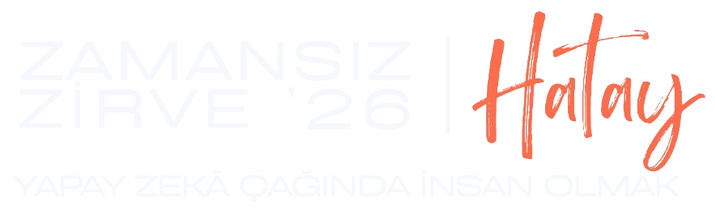
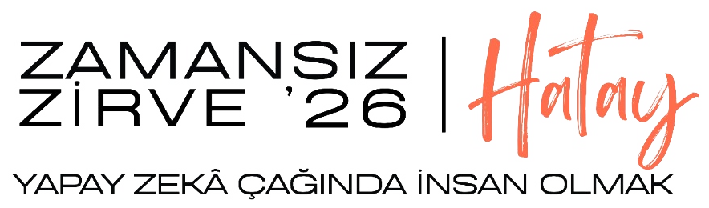
Yapay zekânın hayatımızdaki artan rolünü, insan olmanın değerini ve teknoloji ile uyumlu bir gelecek inşa etmenin yollarını birlikte keşfedeceğiz.
Alanında uzman konuşmacılarla yapay zekâ, etik, kariyer dönüşümü ve insani değerler üzerine derinlemesine söyleşiler ve interaktif oturumlar.
Farklı disiplinlerden öğrenciler ve profesyonellerle tanışma fırsatı. Geleceği birlikte şekillendirecek bağlantılar kurun.
Yapay Zekâ Çağında İnsan Olmak · 9 Ekim 2026 Hatay Mustafa Kemal Üniversitesi
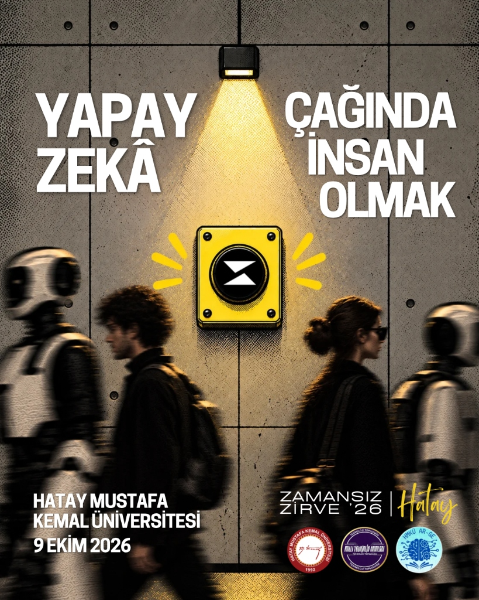
Zamansız Zirve '26 · Hatay Mustafa Kemal Üniversitesi
İnsan ve yapay zekânın birlikte şekillendireceği yeni dönemin kapılarını Hatay'da aralıyoruz. Alanında öncü konuşmacılar, ilham verici oturumlar ve teknoloji ile insanlığın kesişim noktasında derinlemesine söyleşiler sizleri bekliyor.
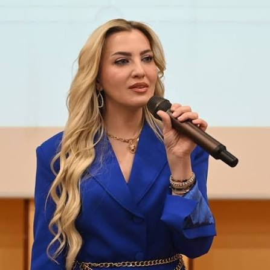
Hatay Mustafa Kemal Üniversitesi'nde Öğretim Görevlisi olarak akademik ve idari çalışmalarını sürdüren Dr. Melodi Çiftçi, üniversite bünyesinde Erasmus Programı Kurum Koordinatörlüğü ve Teknopark Yöneticiliği görevlerini yürütmektedir. Uluslararası proje döngüsü yönetimi, Ar-Ge inovasyon ekosistemleri, teknoloji transferi ve sürdürülebilir kalkınma alanlarında uzmanlaşmıştır. Üniversite-sanayi iş birliğinin güçlendirilmesi ve gençlerin küresel vizyon kazanması hedefiyle birçok ulusal ve uluslararası eğitim ile seminer programına liderlik etmektedir.
LinkedIn Profili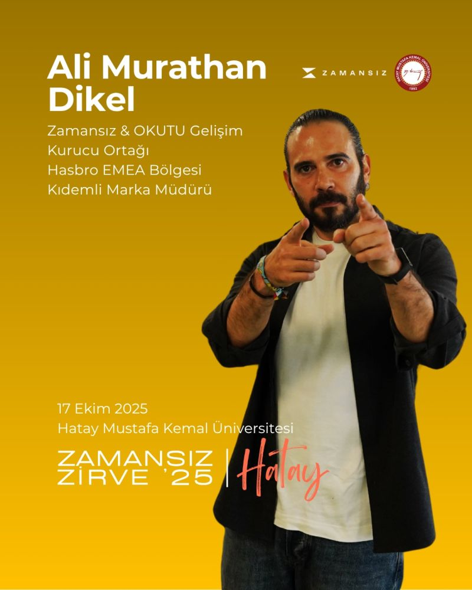
St. George Avusturya Lisesi mezunu olan Dikel, Viyana Ekonomi ve İşletme Üniversitesi'nde başladığı eğitimini Sabancı Üniversitesi Yönetim Bilimleri bölümünde tamamlamıştır. Üsküdar Üniversitesi'nde Tasavvuf Kültürü ve Edebiyatı alanında yüksek lisansını bitirmiş, İslam Medeniyeti Tarihi ve Edebiyatı alanında doktora çalışmalarına devam etmektedir. Coca-Cola ve Sütaş'ta başladığı kariyerine 2011'den bu yana Hasbro Türkiye Pazarlama Müdürü olarak devam etmektedir. Kuşaklararası iletişimi geliştirmeyi ve kadim bilgeliği yaymayı amaçlayan "Zamansız" platformunun kurucusudur.
LinkedIn Profili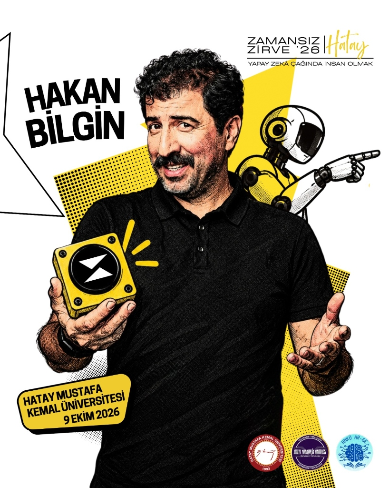
Dokuz Eylül Üniversitesi İşletme Fakültesi mezunu olan sanatçı, oyunculuk kariyerine amatör olarak tiyatroyla başlamış ve 1990 yılında Ferhan Şensoy’un Ortaoyuncular tiyatrosuna katılarak profesyonel olmuştur. Beyazperdedeki ilk deneyimini Türk sinemasının kült yapımlarından Eşkıya filmiyle yaşayan Bilgin, ekranlarda ise Çakallarla Dans serisindeki "Hüseyin" karakteri başta olmak üzere pek çok dizi ve filmdeki başarılı performanslarıyla tanınır. Günümüzde oyunculuğunun yanı sıra kurumsal etkinliklerde sunuculuk, moderatörlük ve motivasyon konuşmacılığı yapmaktadır.
LinkedIn Profili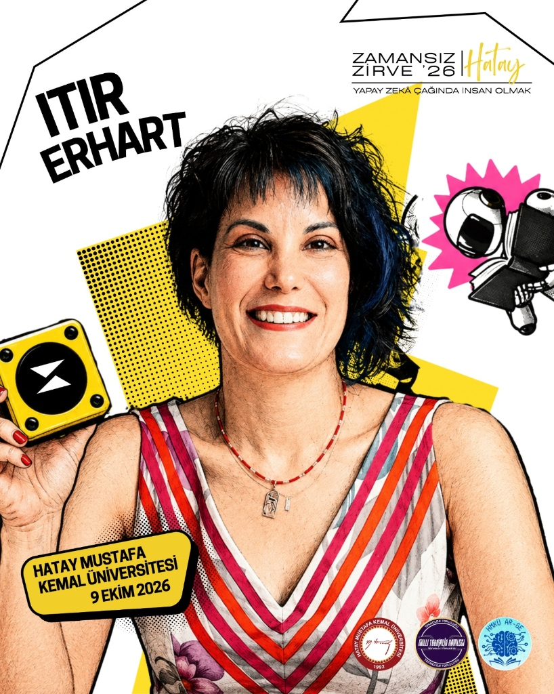
Boğaziçi Üniversitesi İngiliz Dili ve Edebiyatı ile Felsefe mezuniyetinin ardından Cambridge Üniversitesi'nde felsefe yüksek lisansını ve Boğaziçi Üniversitesi'nde doktorasını tamamlamıştır. 2001 yılından bu yana İstanbul Bilgi Üniversitesi İletişim Fakültesi'nde ders vermektedir. Türkiye'nin ilk yardımseverlik koşusu platformu "Adım Adım" ile şeffaflık ve hesap verebilirlik platformu "Açık Açık"ın kurucu ortaklarındandır. 2014'te dünyaca ünlü Ashoka Fellow'u seçilen Erhart; toplumsal cinsiyet, insan hakları, spor sosyolojisi ve sosyal inovasyon alanlarında öncü çalışmalar yürütmektedir.
LinkedIn Profili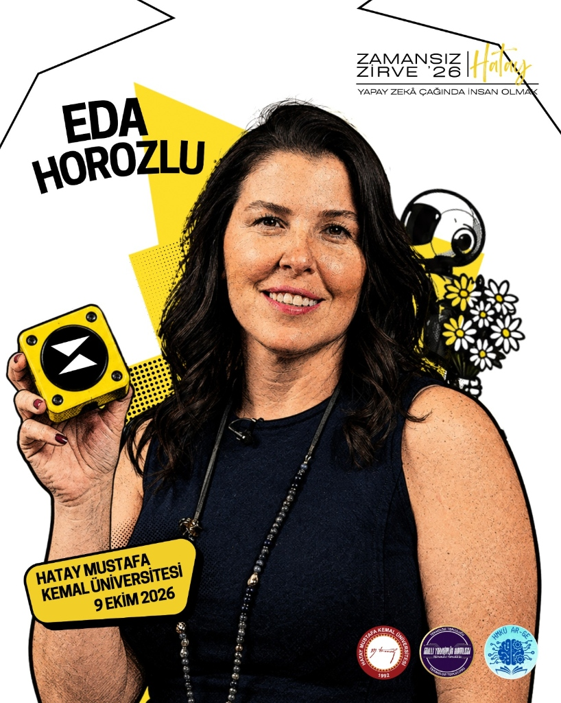
Sakarya Üniversitesi Fizik bölümü mezuniyeti sonrasında İşletme (MBA) ve Üsküdar Üniversitesi'nde Nörobilim yüksek lisanslarını tamamlamıştır. 10 yılı aşkın bankacılık yöneticiliği deneyiminin ardından fizik yasalarını insan davranışları, kurumsal liderlik ve karar bilimi ile harmanlayan yenilikçi programlar geliştirmiştir. AçıkBeyin bünyesinde nörobilim temelli odak, stres yönetimi ve iletişim eğitimleri vermektedir. Harvard ve Michigan Üniversitesi sertifikalı bir hikaye anlatıcısı (storyteller) ve TEDx konuşmacısıdır.
LinkedIn Profili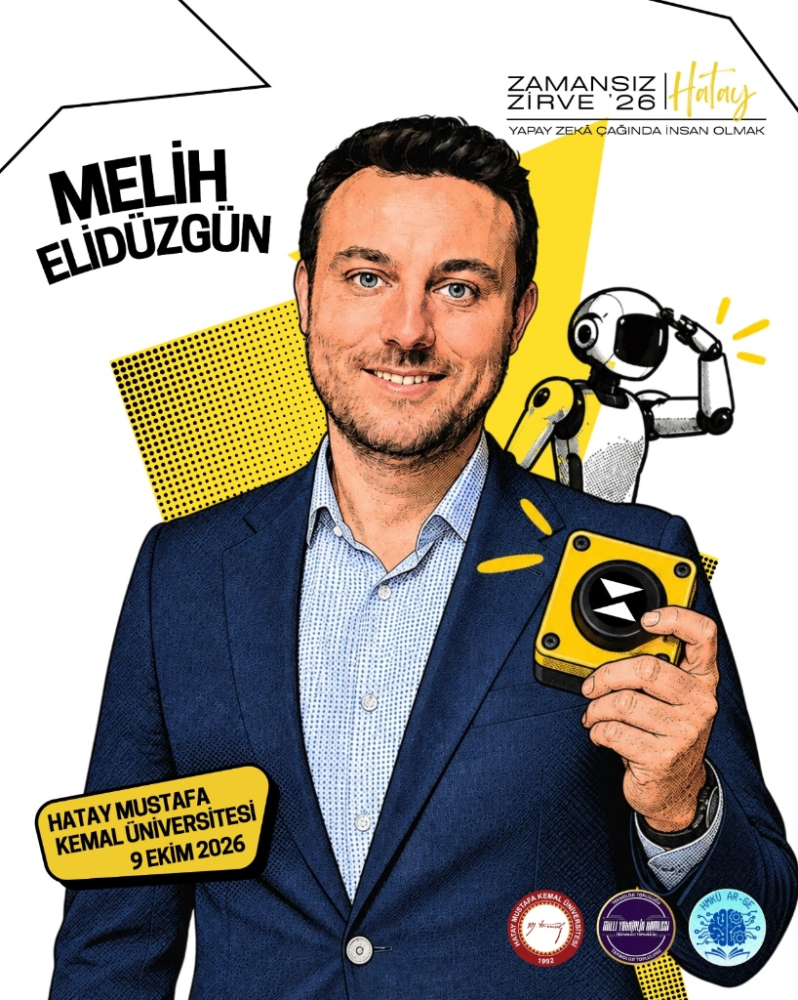
Bahçeşehir Üniversitesi İşletme Bölümü ve Küresel Siyaset yüksek lisansının ardından doktora çalışmalarına devam eden Melih Elidüzgün; BAU bünyesinde girişimcilik dersleri vermiş ve Mezun İlişkileri Koordinatörlüğü yapmıştır. Sürdürülebilir kalkınma amaçlarını önceliklendiren start-up ve yetenek platformu GLOCALBASE Network'ün kurucu yönetim kurulu başkanıdır. YÖKAK denetçiliği, kent konseyi üyelikleri ve uluslararası gençlik temsilcilikleriyle girişimcilik ekosistemine yön vermektedir.
LinkedIn Profili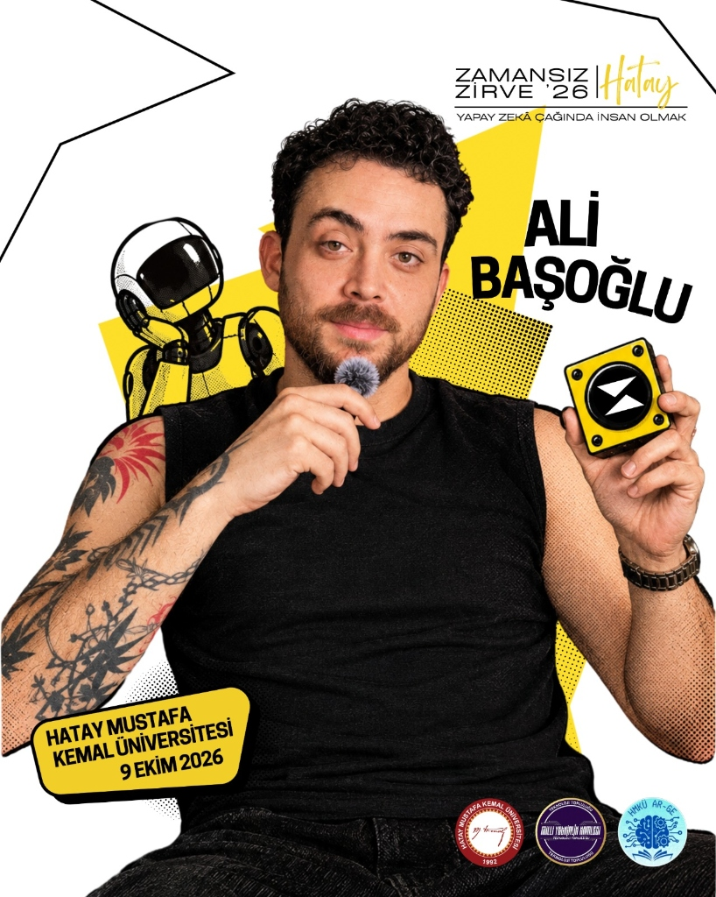
Beykent Üniversitesi Güzel Sanatlar Fakültesi Grafik Tasarım bölümü mezunu olan Ali Başoğlu, samimi, eğlenceli ve günlük hayatın içinden içerikleriyle Instagram, YouTube ve TikTok'ta geniş bir kitleye ulaşmaktadır. İçeriklerinde mizah, yaşam tarzı, moda, spor, günlük hayat, aile ve baba-oğul ilişkisini doğal bir anlatımla bir araya getiren Başoğlu, izleyicileriyle her zaman güçlü ve organik bir bağ kurmayı hedefler. Yaratıcı marka iş birlikleri ve uzun soluklu projelerle dijital içerik üretici kimliğini başarıyla sürdürmektedir.
LinkedIn Profili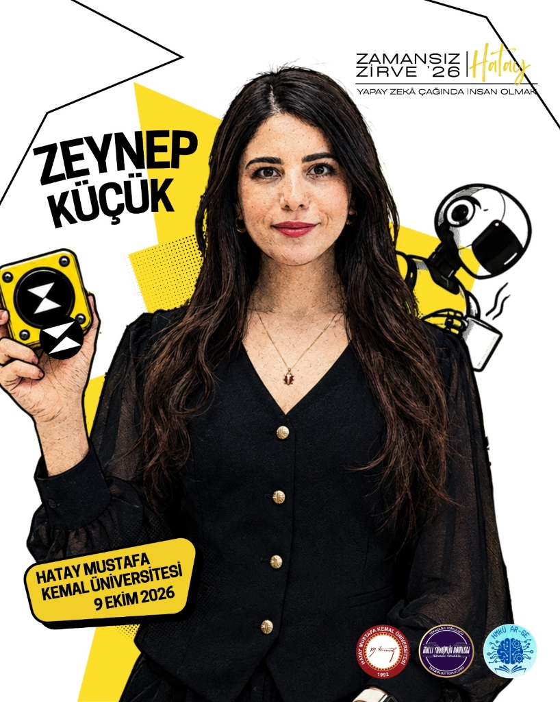
Veri bilimi, yapay zekâ teknolojileri ve yazılım geliştirme odaklı çalışmalarıyla tanınan Zeynep Küçük, dijital dünyada "Woman Engineer" kimliğiyle teknoloji meraklılarına ve genç mühendislere rehberlik etmektedir. Web Summit ve uluslararası teknoloji platformlarında konuşmacı olarak yer alan Küçük; üniversiteler, teknoloji toplulukları ve atölyelerde yapay zekâ araçları, prompt mühendisliği ve yazılım geliştirme eğitimleri vermekte, kadınların bilişim ve mühendislikteki görünürlüğünü güçlendirmektedir.
LinkedIn Profili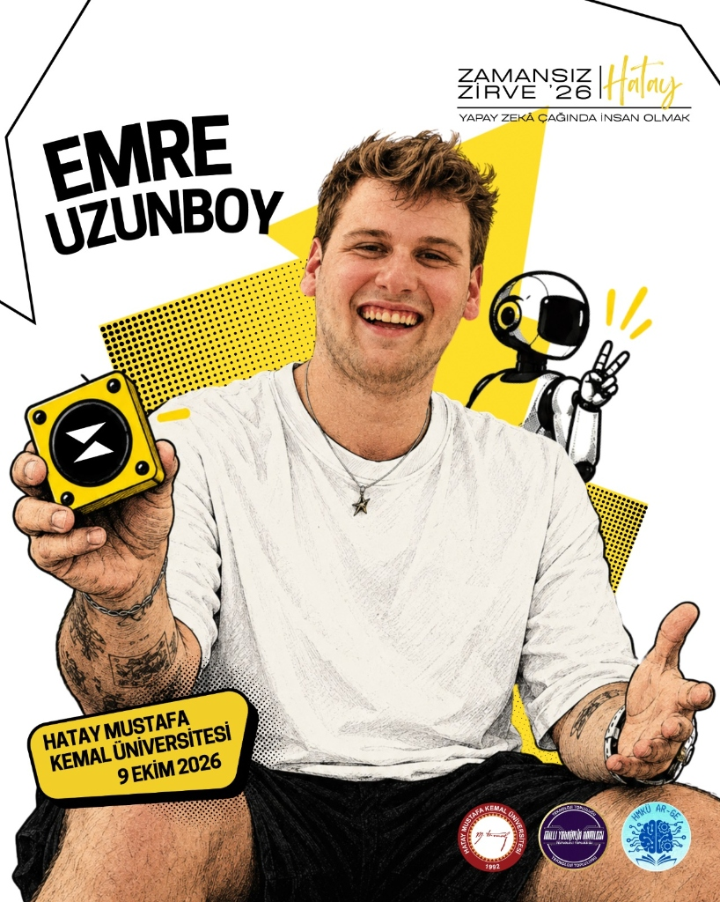
İstanbul Aydın Üniversitesi Reklamcılık bölümünde eğitimine devam eden Emre Uzunboy; YouTube, TikTok ve Instagram platformlarında mizah, popüler kültür, gençlik ve eğlence temalı yenilikçi içerikleriyle geniş kitlelere ulaşmaktadır. Sosyal medyadaki üretkenliğinin yanı sıra televizyon yapımlarında ve yarışma programlarında yer alan Uzunboy, dijital çağda yaratıcılık ve yeni nesil iletişim trendleri üzerine enerjik bakış açısını paylaşmaktadır.
LinkedIn Profili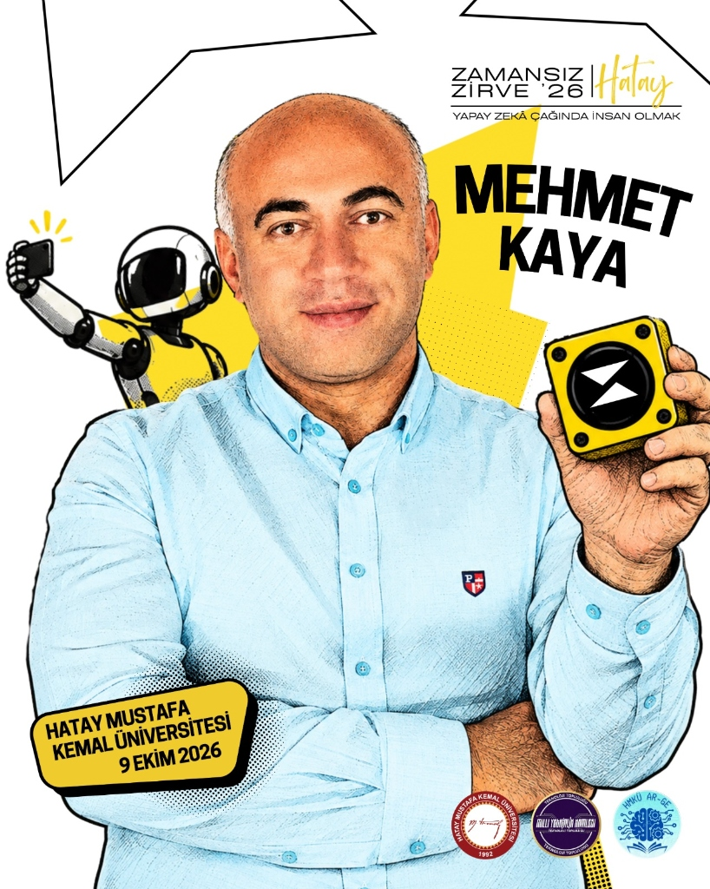
Nöropazarlama, tüketici davranışları ve algı yönetimi alanlarında uzmanlaşmış olan Mehmet Kaya; Neuro Reflect bünyesinde dikkat, algı ve insan karar mekanizmaları üzerine ileri seviye nöro-araştırmalar yürütmektedir. Koç Üniversitesi ve Nöro Akademi gibi platformlarda nöropazarlama eğitimleri vermekte, araştırmalardan elde edilen verileri marka büyüme ve yapay zekâ destekli tüketici içgörülerine dönüştüren stratejiler geliştirmektedir.
LinkedIn ProfiliZamansız'ın daha önceki üniversite etkinliklerinden kareler
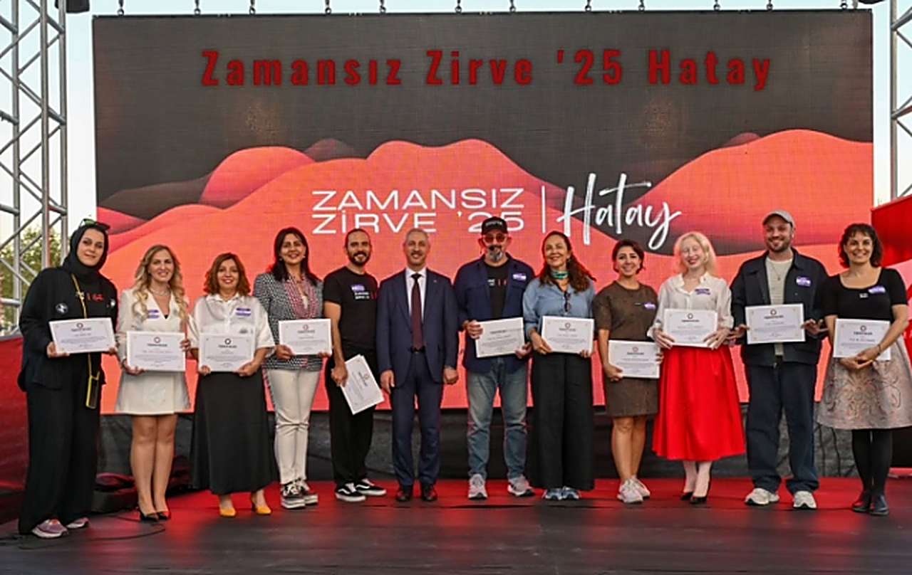
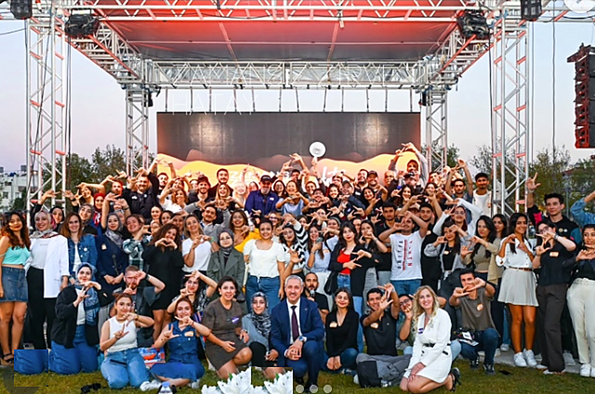
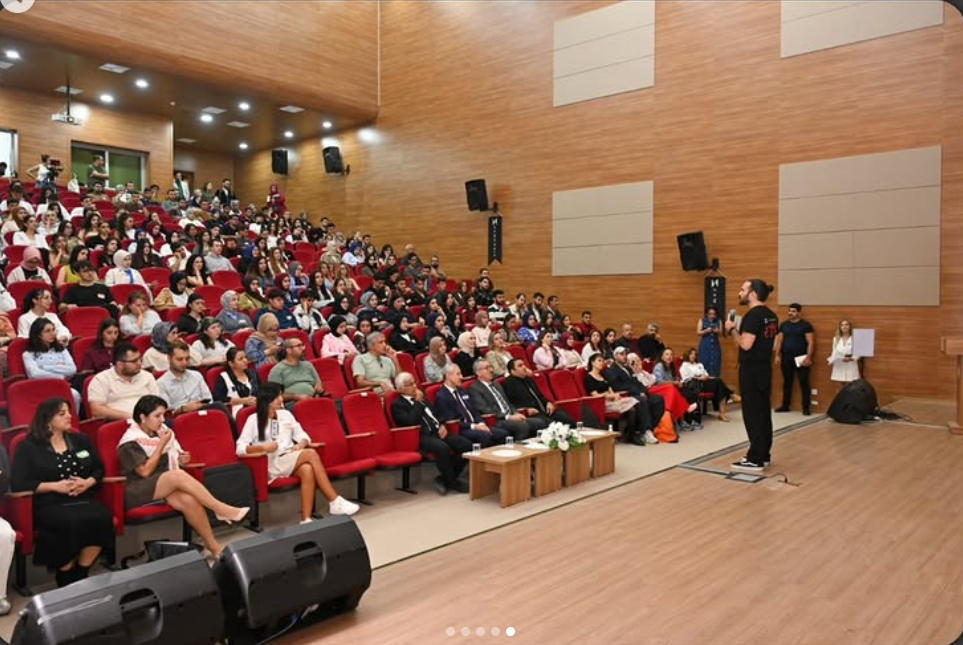
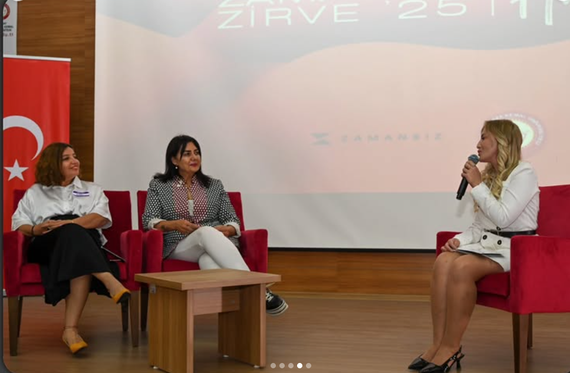
Zirvemiz, Hatay Mustafa Kemal Üniversitesi'nin 400 kişilik prestijli Atatürk Konferans Salonu'nda gerçekleştirilecektir. Canlı salon doluluk durumunu aşağıdan anlık takip edebilirsiniz.
Kontenjan sınırlıdır. Yerinizi şimdiden ayırtın.
{kind=link}